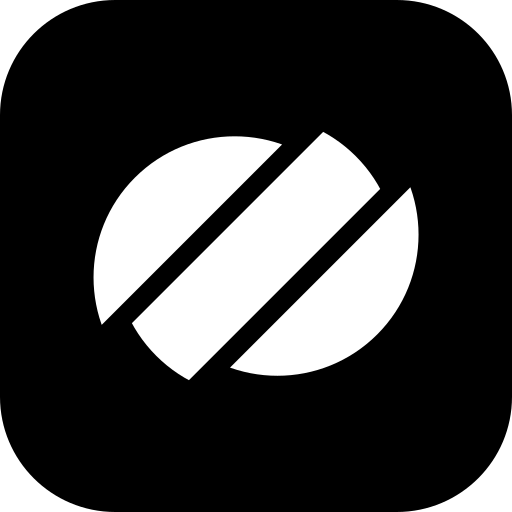
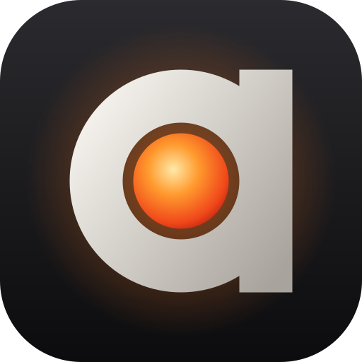
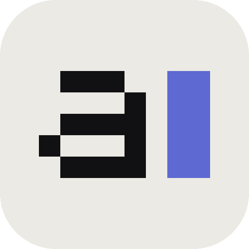

分合
字母 A 就是一张调度图：顶点派活，两路并行，横杠接力，落地各一个结点。

余烬
灰里一点没灭的火：小写 a 的字碗是一圈灰，字腔里是还在烧的芯。



像素
ash 也是一个 shell：一位图的字，后面跟着一块还在等输入的光标。

字母 A 就是一张调度图：顶点派活，两路并行，横杠接力，落地各一个结点。

灰里一点没灭的火：小写 a 的字碗是一圈灰，字腔里是还在烧的芯。



ash 也是一个 shell：一位图的字，后面跟着一块还在等输入的光标。